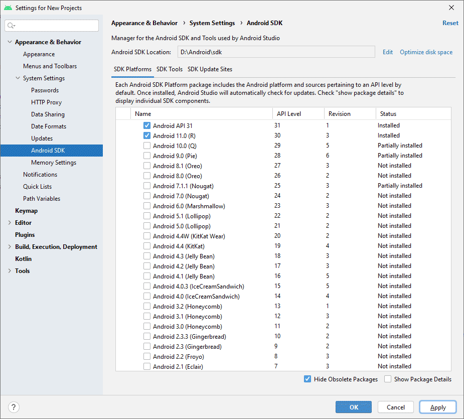
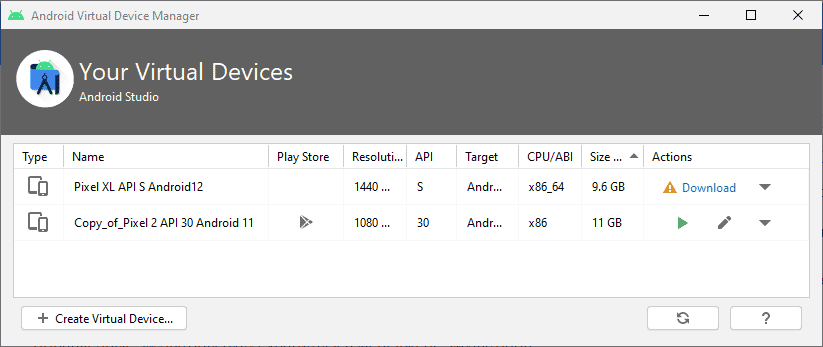
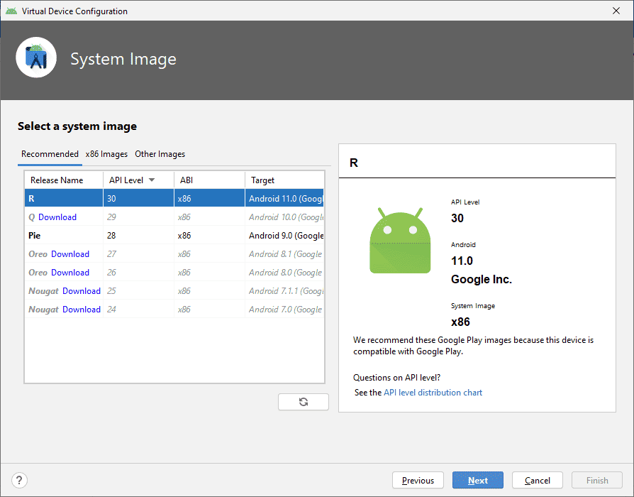
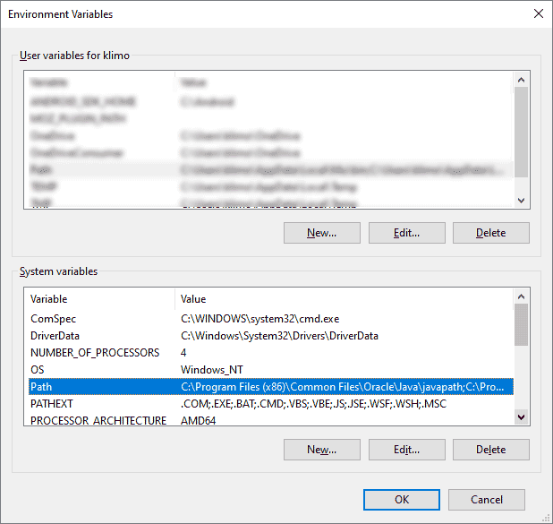
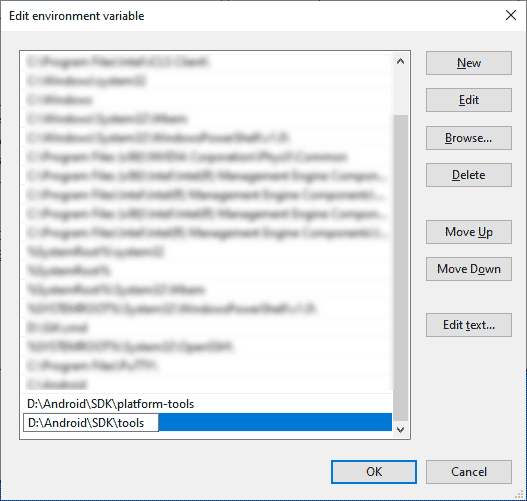
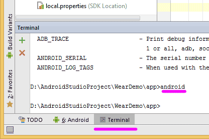

Подготовка к разработке
Android - бесплатная операционная система, основанная на Linux с интерфейсом программирования Java.
Если у вас появилось желание разрабатывать приложения для телефонов под управлением Android, то вам необходимо тщательно подготовиться и установить весь необходимый инструментарий для работы.
Установка Android Studio
Статьи часто перерабатываются, так как некоторые вещи быстро устаревают. Но уследить за всем я не могу, поэтому в чём-то придётся разбираться самостоятельно, если встретите различия.
Важно понимать, что само приложение пишется на Java (а теперь ещё и на Kotlin), а среда разработки выбирается по вкусу. То, что можно сделать на Android Studio (или в его старшем брате IntelliJ IDEA), можно сделать и на Eclipse и в других редакторах. Хотя с 2016 официальная поддержка Eclipse прекратилась.
Скачать установочный пакет для студии можно со страницы https://developer.android.com/studio/index.html
Сама установка проблем вызвать не должна. Установочный пакет включает в себя необходимый минимум. Иногда вам необходимо запускать Android SDK Manager и проверять наличие новых версий SDK через меню Tools | Android | SDK Manager:

Со временем вы сами разберётесь, что вам нужно ставить, а что не обязательно. На первых порах соглашайтесь на те условия, которые вам предложит менеджер по умолчанию.
Пользователь из Болгарии написал, что в Win64 требуются права администратора при установке или обновлении. Имейте в виду. У меня на чистой системе ничего не спрашивало.
В версии студии 2.3 (может и раньше) ставится пакет OpenJDK, который является альтернативой JDK от Oracle. В настройках студии есть примечание, что OpenJDK является рекомендуемым вариантом, хотя вы можете указать путь и к стандартной JDK. В любом случае у вас будет Java 8 вне зависимости, какой вариант вы выберете.
Создание эмуляторов
Для отладки приложений используется эмулятор телефона - виртуальная машина, на которой будет запускаться наше приложение. Также можно использовать и реальное устройство.
Сейчас в момент установки студия создаёт одно устройство для эмулятора. Если это не так, вы всегда можете установить вручную. А также можете добавить и другие устройства под разные версии Android, разрешения экрана и т.д.
Чтобы создать эмулятор телефона, выбираем в меню Tools | Android | AVD Manager. При первом запуске может появиться окно мастера, потом будет выводиться окно с установленными эмуляторами.

Нажимаем кнопку Create a virtual device и в новом окне видим набор возможных эмуляторов, в том числе и для часов. Скачайте необходимые эмуляторы. Для начала вполне подойдёт один эмулятор.

Вводим любое понятное имя, например, Android4. Выбираем нужную версию Android, размер экрана и т.д.
При необходимости можно создать эмуляторы для каждой версии ОС и проверять программу на работоспособность. Остальные настройки можно оставить без изменений. Вы всегда можете вернуться к настройкам и отредактировать снова. Часто рекомендуют использовать опцию Use Host GPU, чтобы задействовать возможности графического процессора. Это даёт прирост скорости эмулятора. Нажимаем кнопку OK.
Добавленные эмуляторы будут храниться в менеджере эмуляторов.
Если вы создали несколько эмуляторов, то выделите нужный и нажмите кнопку с зелёным треугольником для запуска эмулятора. Значок карандаша позволяет отредактировать настройки. Но обычно эмулятор не запускают отдельно. Когда вы будете запускать приложение, то студия сама предложит запустить эмулятор.
Помните, что виртуальные машины по умолчанию сохраняются в папке пользователя, и пути к папке не должны содержать русские символы во избежание проблем.
Если вы всё же попались в эту ловушку, то дам ссылку по смене папки пользователя на английский: (спасибо читателю Евгению Степанову за подсказку). Также можно подправить ini-файл и прописать путь к виртуальному устройству таким образом, чтобы в пути не встречались русские буквы (соответственно, сам файл *.avd также нужно переместить в другое место).
В зависимости от мощности компьютера нужно немного подождать, чтобы сначала загрузился эмулятор. Также можно использовать реальный телефон. Я обычно использую старый телефон и эмулятор для новых версий Android.
Тестируем на реальном устройстве
Окончательную версию приложения желательно проверять на настоящем устройстве. Начиная с Android 4.4, на устройстве (планшет, телефон, часы) нужно активировать режим разработчика. Для этого идём в Настройки, там открываем страницу "О телефоне" и щёлкаем семь раз на строчке с номером сборки Build number. После этого в настройках появится новый пункт Для разработчиков или что-то в этом роде, если производитель использует свою оболочку.
Открыв страницу для разработчиков, вам нужно включить отладку через USB. Также я включаю опцию Не выключать экран. Для некоторых устройств требуется установить отдельный драйвер, ищите информацию на сайте у производителей.
Работаем в режиме терминала
Студия также позволяет запускать команды командной строки в отдельном окне Terminal. Для удобства следует немного настроить систему под себя.
У меня установлена нелокализованая версия Windows, поэтому часть пунктов будут даны на английском.
Для Windows 7/8 откройте Панель управления | Система, нажмите кнопку Advanced System Settings. В новом окне нажмите кнопку Environment Variables.
В Windows 10 в строке поиска наберите "system" и выберите пункт "Edit the system environment variables". Откроется диалоговое окно "System properties" с открытой вкладкой "Advanced". Нажмите кнопку Environment Variables.
Найдите переменную Path в списке System variables

Нажмите на кнопку Edit для редактирования переменной. Добавьте в конце строки точку с запятой, а затем укажите пути к папкам platform-tools и tools, которые входят в состав SDK. В моём случае получилось следующее:
;D:\Android\SDK\platform-tools;D:\Android\SDK\tools
В Windows 10 редактирование намного проще.

Закройте все окна (лучше перезагрузиться). Проверьте, правильно ли всё работает. Запустите командную строку и введите команду:
echo %path%
Вы должны увидеть строку с перечислением всех путей, входящих в переменную Path, в том числе и ваши.
Для следующей проверки введите команду:
adb
Запустится перечень параметров команды.
Также попробуйте команду:
android
Запустится окно SDK Manager.
Если вы что-то прописали не так, то команды не будут распознаны и вам надо исправить ошибку в написании пути.
Теперь проделаем эти операции в самой студии. Запустите студию и откройте проект (см. следующий урок). Внизу в строке состояния есть вкладка Terminal. Переключитесь на неё. В окне терминала введите любую из двух предыдущих команд.

Документация
Последнюю версию документации всегда можно найти по адресу . Если у вас возникли проблемы с интернетом, то в подпапке /docs в вашей папке установленной Android SDK можно найти её локальную копию (если вы не отказывались от её установки).